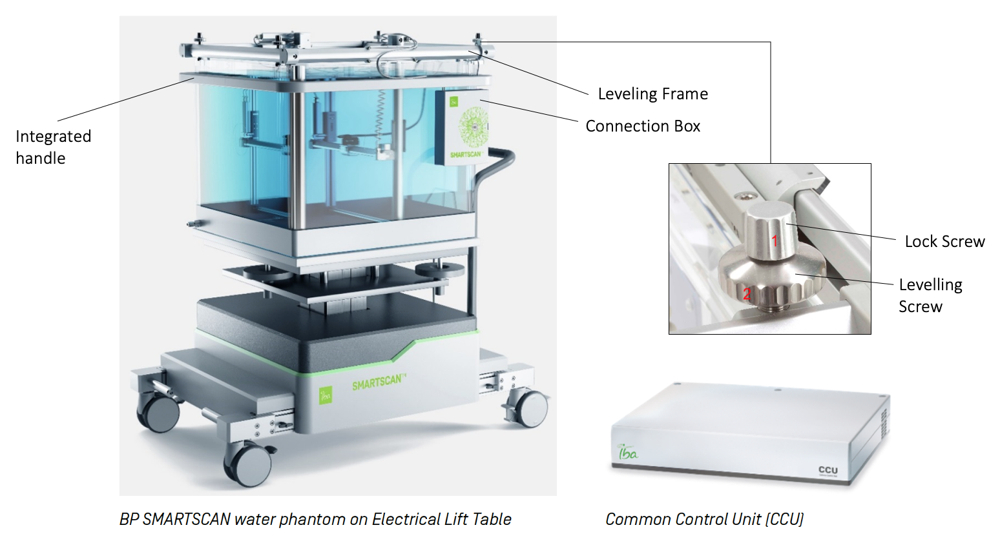

| SMARTSCAN |

Rough Positioning of Water Tank
move the tank under the gantry
make sure wheels are out of the turn table Connections (to avoid plugging in after aligning the water tank)
plug in the power cord for lift table
connect the hand control pendant to connection box connect the drive control cable between connection box and CCU control connect power cord to CCU (common control unit) (Ethernet cable port for IP settings) connect the hose between water reservoir and water tank Fine Positioning of Water Tank
align the cross on the bottom to the LINAC light field crosshair
* adjust position by moving the water itself/by the integrated handle/by the screws on the lift table DO NOT move by levelling frame align the lasers to the marking at the sides move the motors so that it points to the 0 marking on the rulers of all X/Y/Z positions set "Zero Position" with hand control Setup the Levelling Frame
Levelling Pin Method
insert the alignment pins (for aligning the frame in respect to water surface)
3 Point Method Using Alignment Cap
unlock the lock screws adjust the levelling screws so that the pins just touch the water surface lock the lock screws Connect Chamber
attach detector holder
connect the chamber stealth chamber / reference chamber connect CCU to myQA Accept computer |